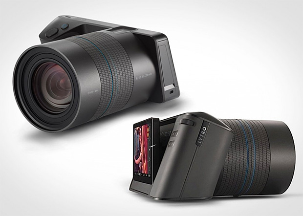

Lytro Illum
- Cena s DPH:
- 1599,00 €
- Cena bez DPH:
- 1332,50 €
- Dostupnosť:
- do 5 pracovných dní
Lytro Illum je druhou generáciou jedinečného konceptu digitálneho fotoaparátu, ktorý je založený na úplne novom prístupe k digitálnej fotografii umožňujúcej zachytávať a spracovávať svetlo do výslednej fotografie revolučným spôsobom. 1599,00 €
Popis produktu
Lytro Illum predstavuje druhú generáciu digitálneho fotoaparátu, ktorý umožňuje vďaka prevratnej technológii revolučným spôsobom zachytávať a spracovávať svetlo do výslednej fotografie. Čaro novej revolučnej technológie spočíva v spôsobe zachytávania svetla – respektíve jeho lúčov. Nová technológia umožňuje dodatočne pracovať s exponovanými fotografiami v takej miere, ktorá je pri súčasných fotoaparátoch absolútne nepredstaviteľná. Fotografie je možné podľa ľubovôle preostrovať iba jednoduchým kliknutím na miesto kde chcete aby bola fotografia ostrá a fotografia okamžite zmení rovinu zaostrenia na zvolené miesto. Okrem tejto úchvatnej schopnosti dokážete obyčajným potiahnutím fotografie vo zvolenom smere vo veľmi obmedzenom rozsahu pozrieť doslova za okraj fotografie. Približovanie detailov je možné robiť priamo na fotografii, bez nutnosti otvoriť si ju v prehliadačoch fotografií, ktoré obsahujú nástroje pre túto funkciu. Tieto úchvatné možnosti majú základ v úplne revolučnej technológii zachytávania svetelných lúčov. Kým prvá generácia bola zameraná najme na overenie technológie, tak druhá generácia je plnohodnotným digitálnym fotoaparátom. Ten sa opiera o nový špeciálne vyrobený snímač Light Field Sensor s rozlišením 40 Megaray, Lytrom patentovanú technológiu mikro šošoviek umožňujúcich zachytiť farbu, intenzitu a smer svetla prichádzajúceho do fotoaparátu. Tým, že Light Field Sensor dokáže zachytiť a využiť celú silu sveteľného poľa, môžu fotografovia vykresliť nielen prierez reality, ale aj autentické interaktivne okno do ich sveta.